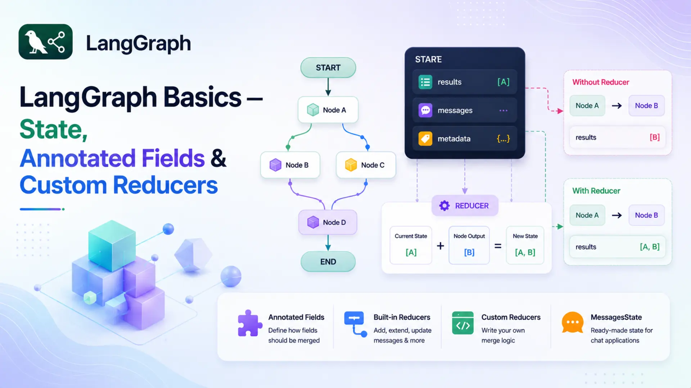
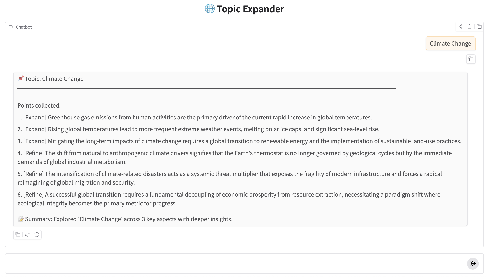

LangGraph Basics: Part 2 — State, Annotated Fields & Custom Reducers

🔄 In Part 1 we introduced LangGraph's three core primitives — State, Nodes, and Edges — and built a simple Q&A bot with a single node. The state was a plain TypedDict with two fields: question and answer. Simple, clean, and exactly right for a single-node graph.
🧩 But as graphs grow — more nodes, more processing steps — a new challenge appears. By default, LangGraph uses a last-write-wins rule: if two nodes both return a value for the same field, the second one overwrites the first. For most fields that's fine. But for fields that should accumulate data across nodes — a running list of results, a growing message history — overwriting is a bug waiting to happen.
🛠️ The fix is Annotated fields with reducer functions. A reducer tells LangGraph how to merge a node's returned value with whatever the field already holds, instead of replacing it. In this part we'll cover how reducers work, the built-in options, how to write your own, and the ready-made MessagesState shortcut. A complete Topic Expander application ties it all together.
✅ Who this is for: You've read Part 1 (or understand StateGraph, nodes, and edges). No extra prerequisites needed.
📚 Table of Contents
💾 1. What is State — Really?
In Part 1 we said that state is a shared dictionary that flows through your graph. That's accurate, but it glosses over something important: what exactly happens when a node returns a value?
Every node in LangGraph is expected to return a partial dictionary — only the keys it changed. After the node finishes, LangGraph takes that partial dict and merges it back into the full state. The key question is: how does it merge?
For plain TypedDict fields, the answer is simple: last write wins. Whatever the node returns replaces whatever was already in that field. The previous value is gone.
📌 Default merge rule: For any field declared without a reducer, LangGraph replaces the old value with the new one. This is exactly what you want for fields like answer or summary — you only care about the latest value.
The Merge Problem
Last-write-wins works perfectly when only one node writes to a field, or when you genuinely want to overwrite. But imagine a graph where two nodes both contribute results to a shared list — say, a list of points about a topic. Node 1 generates key facts. Node 2 generates deeper insights. Both return values for points.
With a plain TypedDict field, this is what happens:
Node 2 wipes out everything Node 1 produced. If you weren't careful, you'd never notice — the graph would still run without errors, but you'd lose half your data silently. This is the merge problem.
The fix is to tell LangGraph how to merge values for this specific field — and that's exactly what Annotated fields and reducers do.
🏷️ 2. Annotated Fields
Before we look at Annotated, let's get clear on what a reducer actually is — because Annotated is just the mechanism for attaching a reducer to a field.
🔁 What is a reducer?
A reducer is a function that answers one question: "when this field already has a value and a node returns a new value for the same field, how should the old and new values be combined?"
Think of a shared shopping list at home. You write three items in the morning. Your partner adds two more in the afternoon. The rule for combining those two lists is the reducer — it could be "merge everything together", "keep only unique items", or "take the latest version". LangGraph calls that rule function automatically whenever a node writes to a field that has a reducer attached.
Without a reducer → LangGraph replaces the old value with the new one (last-write-wins).
With a reducer → LangGraph calls reducer(old_value, new_value) and uses the result.
Annotated is a standard Python typing tool — not something LangGraph invented. It lets you attach extra metadata to a type hint. LangGraph reads that metadata to find the reducer for each field.
What is Annotated?
Annotated comes from Python's typing module (Python 3.9+). The syntax is:
Python itself ignores the metadata at runtime — it has no effect on how the variable behaves. But libraries and frameworks can read it using typing.get_type_hints() with include_extras=True. LangGraph does exactly this: when it sees Annotated[list[str], some_function], it treats some_function as the reducer for that field.
📝 Note: Annotated is a general Python feature used by many libraries — Pydantic uses it for field validators, FastAPI uses it for dependency injection, and LangGraph uses it for reducers. The concept is the same: attach structured metadata to a type and let the framework read it.
Annotated in State
To fix the merge problem, declare the field with Annotated and pass a reducer function as the second argument:
Now when a node returns {"points": ["Insight A", "Insight B"]}, LangGraph doesn't replace the list. Instead it calls:
The result is the two lists joined together. Whatever was in points before is preserved, and the new items are added at the end. Here's the same two-node scenario, now working correctly:
Both nodes' contributions survive. The field accumulates instead of overwriting. Fields without Annotated — like topic and summary above — still use last-write-wins, which is exactly what you want for those.
🔗 How does Annotated actually solve the merge problem?
When your graph starts, LangGraph inspects all the type hints in your state class. For a plain field like answer: str, it notes "use the default replace rule". For an Annotated field like points: Annotated[list[str], operator.add], it extracts the second argument — operator.add — and stores it as the reducer for that field.
From then on, whenever a node returns a value for points, LangGraph calls operator.add(current_value, new_value) instead of doing a replacement. Annotated is the attachment point — the only way to tell LangGraph "use this specific function to merge this field". Without it, there's no hook to plug a reducer in.
🔧 3. Built-in Reducers
Any Python function that fits the reducer contract works — you're not limited to any specific library or built-in. That said, two ready-made options cover the vast majority of cases: operator.add from Python's standard library, and add_messages from LangGraph itself. Section 4 covers writing your own when you need different logic.
operator.add
Python ships with a built-in standard library module called operator. It provides function-form equivalents of Python's built-in operators — things like +, -, *, and more. These are useful when you need to pass an operator as a callable (something you can hand to another function), rather than use it as inline syntax.
operator.add(a, b) does exactly the same thing as a + b. For lists that means concatenation, for strings it joins them, and for numbers it adds them:
When used as a reducer for a list[str] field, each node simply returns a list of new items. LangGraph concatenates that list onto whatever is already in the field. The items accumulate in the order the nodes run — exactly like appending to a list, except the append logic lives in the state definition rather than in the nodes themselves.
💡 Tip: Because the accumulation is handled by the reducer, your node functions stay simple — they just return a list of new items, with no need to read the current state value before appending.
add_messages
add_messages comes from LangGraph and is specifically designed for chat message history. It does something smarter than plain concatenation: it deduplicates by message ID. If a message with the same ID already exists in the list, the newer version replaces the older one. New messages (no matching ID) are appended.
This is important for conversational agents where messages can be updated or corrected — you don't want duplicates cluttering the history. add_messages is the right choice whenever your field holds LangChain message objects (HumanMessage, AIMessage, etc.).
✍️ 4. Custom Reducers
operator.add and add_messages cover the most common cases. But sometimes you need different merge logic — for example, keeping only unique items, capping a list at a maximum length, or merging dictionaries in a specific way. Any Python function can serve as a reducer, as long as it fits the right contract.
Reducer Signature
A reducer is a plain function that takes two arguments and returns a merged value:
A few rules to keep in mind:
- The function should be pure — no side effects, no modifying inputs in place.
- It must handle the initial case where current_value is empty (an empty list [], an empty string "", etc.).
- The return type should match the field's declared type — if the field is list[str], return a list[str].
A Concrete Custom Reducer
Say you want to collect tags across multiple nodes, but you never want duplicates in the list. operator.add would blindly concatenate and allow repeats. A custom reducer solves this:
The function is just ordinary Python — no LangGraph-specific imports needed. Pass it as the second argument to Annotated and it becomes the merge strategy for that field.
💬 5. MessagesState — The Shortcut
Chat-based graphs need a messages field with add_messages as the reducer so often that LangGraph ships with a pre-built state class to save you the boilerplate:
You can use it directly as your state class, or inherit from it and add your own fields:
MessagesState is the right choice whenever your graph is primarily message-based — chatbots, conversational agents, anything where the core data structure is a growing list of HumanMessage / AIMessage objects. For other types of accumulation (strings, custom objects, numbers), define your own Annotated field with the appropriate reducer.
🤖 6. Complete Example: Topic Expander
Theory is clearest when it's grounded in working code. The Topic Expander is a two-node linear graph — the same structural skeleton as Part 1 — but the state now uses an Annotated field with operator.add. Both nodes write to the same points field, and because of the reducer, both contributions survive in the final state.
Graph flow:
- expand_node — given a topic, asks Gemini to generate 3 key points. Returns {"points": [...]}.
- refine_node — reads those points from state, generates a deeper insight for each one. Returns {"points": [...], "summary": "..."}.
After both nodes run, state["points"] holds 6 items — 3 from expand_node and 3 from refine_node, merged by the reducer. The project structure:
config.py and llm.py are identical to Part 1 — they load settings from the shared .env file and wrap ChatGoogleGenerativeAI. See Part 1, Section 2.1 for a detailed walkthrough of those files. The interesting changes are in state.py, nodes.py, and graph.py.
Full Code Walkthrough
state.py — the state definition is where the Part 2 changes begin:
Three fields:
- topic — the user's input. Plain field; only set once at the start, never overwritten.
- points — accumulates across nodes. Annotated[list[str], operator.add] means each node's returned list is concatenated onto this field rather than replacing it.
- summary — a plain string written once by the final node. Last-write-wins is fine here.
nodes.py — two node functions, both returning partial state updates:
A few things to notice:
- Prompts from files: Prompt text lives in prompts/expand_node.txt and prompts/refine_node.txt, loaded once in __init__. The .format() call fills in the {topic} and {existing} placeholders at runtime. Keeping prompts in separate files makes them easy to edit without touching code.
- Node tagging: Each item is prefixed with [Expand] or [Refine]. In the output you can immediately see which node produced which item — helpful for understanding how the reducer merged the two lists.
- expand_node returns {"points": lines[:3]} — just a list of 3 strings. It doesn't touch topic or summary.
- refine_node reads state["points"] — which at this point already holds the 3 items from expand_node. It generates one insight per item, then returns that list under the same "points" key. Thanks to the reducer, these insights are appended, not written over.
- refine_node also sets "summary", a plain field — so that's a regular replacement, not accumulation.
- _extract_text handles both the plain string format (older langchain-google-genai) and the list-of-dicts format (4.x API).
graph.py — two nodes wired in a linear sequence:
The graph structure is identical to Part 1 — linear, no branching. The only structural difference is a second node added to the chain. The interesting new behaviour lives entirely in the state definition, not in the graph topology.
topic_runner.py — runs the graph and formats the output:
One detail: when calling invoke(), we initialise points as an empty list []. This is important — operator.add(current, new) requires current to be a list. Passing None or omitting the key would cause a TypeError.
Running & Output
Activate your virtual environment, navigate to the basics-2-state-annotated-reducers/ folder, and run:
You should see output similar to this (exact wording varies — it's a live LLM call):
The [Expand] and [Refine] labels make it clear which node produced each item. Items 1–3 came from expand_node; items 4–6 came from refine_node. They're all in the same list because operator.add concatenated them — exactly the behaviour the reducer was designed to produce. Without the Annotated declaration, only items 4–6 would survive.
You can visualise the graph structure at any time by calling get_graph().draw_mermaid() on the compiled graph. Here's what the Topic Expander graph looks like:
%%{init: {'flowchart': {'curve': 'linear'}}}%%
graph TD
__start__([__start__]) --> expand
expand([expand]) --> refine
refine([refine]) --> __end__([__end__])
Topic Expander graph — two nodes in a linear sequence, both writing to the same points field
🖥️ 7. Web UI with Gradio
The Gradio app wraps TopicRunner in a chat interface so you can explore any topic interactively. The structure mirrors Part 1's app.py — type a topic, get the expanded points and summary back in the chat window.
Run it with:
Gradio will start a local server and open the chat interface in your browser. Type any topic — "Quantum Computing", "Solar Energy", "Large Language Models" — and the graph will expand and refine it, showing all accumulated points.

Topic Expander running in the Gradio ChatInterface
🏁 8. Conclusion
The graph structure in this post is identical to Part 1 — two nodes, one path, no branching. What changed is the state. By adding Annotated[list[str], operator.add] to the points field, we turned a dumb overwrite into a smart accumulation. Both nodes contribute to the same field and both contributions survive to the end.
Here's a quick summary of what we covered:
- LangGraph's default merge rule is last-write-wins — the node's returned value replaces the field's current value.
- Annotated fields attach a reducer function to a type hint, telling LangGraph to merge rather than replace.
- operator.add concatenates lists (or strings, or numbers). Most commonly used for accumulating items across nodes.
- add_messages merges LangChain message objects with deduplication by ID — the right choice for chat history.
- Custom reducers are plain Python functions: (current, new) → merged. Any logic you need.
- MessagesState is a pre-built state class that ships with LangGraph — use it (or extend it) for message-based graphs.
🔜 Up next — Part 3: We'll introduce conditional edges and routing logic. Instead of every node connecting to the next in a fixed sequence, you'll write functions that decide at runtime which path the graph should take. This is where graphs start behaving like real decision-making systems.

Technical Stacks
 Python
Python LangGraph
LangGraph Gemini
Gemini
References
-
 GitHub Repository:
LangGraph Basics — Source Code
GitHub Repository:
LangGraph Basics — Source Code
-
LangGraph Docs — State & Reducers:
langchain-ai.github.io/langgraph — Reducers
-
Google Gemini API:
ai.google.dev